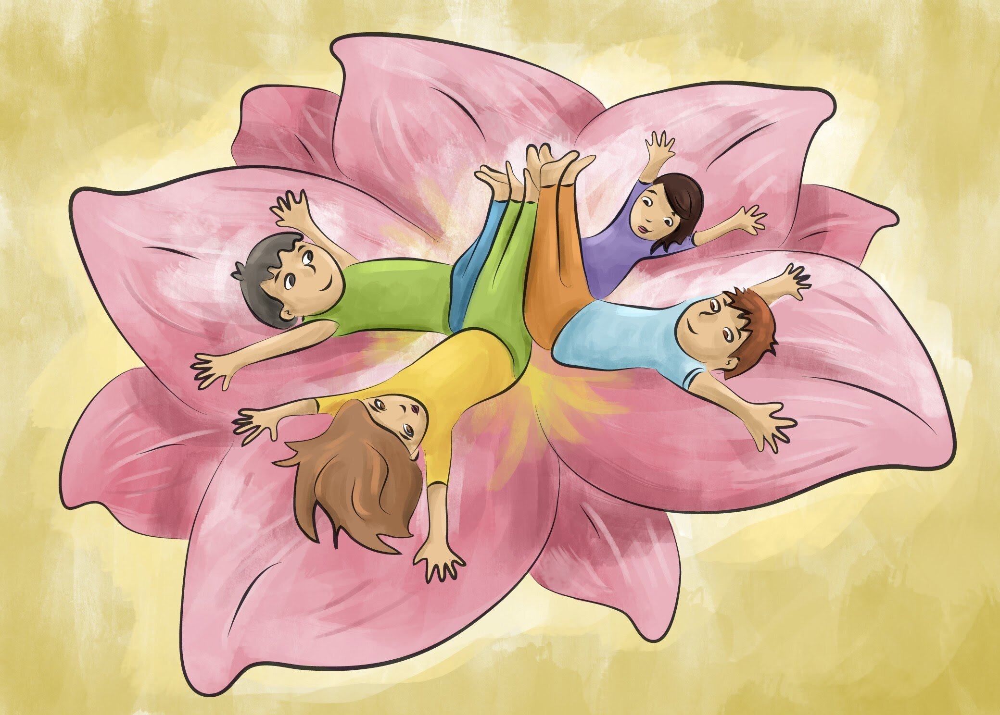

La sinergia de cooperación, confianza, comunicación, respeto, compromiso, y valoración que encontramos en la magia del trabajo en equipo, invita a la apertura de una atmósfera amorosa y de un profundo crecimiento personal y grupal sin límites.
El trabajo en equipo es un aprendizaje totalmente necesario de facilitar en nuestros niños y niñas desde muy temprana edad, para así instaurar esta necesidad de socialización, pudiendo adquirir y fortalecer habilidades para su desarrollo integral.
El valorar el “Todos/as” sobre el “Yo”, puede ser un camino para que ellos comprendan la responsabilidad de construir junto a otros/as, edificando un nuevo paradigma de no competitividad. Para esto es necesario trabajar en nuestra infancia sobre la confianza, la seguridad en sí mismos, ya que de otra manera no podrán confiar en otros.
Al impulsar esta dimensión social en la infancia, estamos favoreciendo actitudes que los eduquen en valores, tales como: Solidaridad, Tolerancia, Integración, Confianza, Veracidad, Responsabilidad, Justicia, etc.
¿Cómo hacerlo? Aquí van algunas de las posturas que puedes hacer junto a ellos y ellas:
En parejas
La gran mesa
Se sitúan de pie, frente a frente, sobre el mat de yoga. Cada uno/ debe dar un paso hacia atrás, subiendo los brazos hacia el cielo, tan separados como los hombros. Juntan las palmas de sus manos con las del compañero/a. Manteniendo las manos pegadas, van dando pasos hacia atrás. Cada vez tendrán que bajar más sus espalda hacia el suelo y sus manos quedarán sobre los hombros del compañero/a. Llegará un momento en que hayan bajado bastante, con la cadera justo por encima de los pies. Ahí mantienen, mirando el suelo e imaginando que son una gran mesa, donde puede colocarse tazas y vasos, los cuales para no caerse es necesario tener estirada la espalda y no crear jorobas.
El tornillo
Sentados con piernas cruzadas, espalda con espalda. Un niño/a gira un poco el torso hacia el lado derecho, llevando la mano derecha hacia la rodilla izquierda del compañero/a y la mano izquierda la sitúa en su muslo derecho. El otro compañero/a tiene que reflejar los movimientos. Pueden sostener esta postura durante unas 5 a 8 respiraciones para luego cambiar de lado.
El gran barco
Sentados uno frente al otro con las piernas estiradas a la altura de las caderas, mantenemos la espalda recta y hombros abajo. Tomamos aire, elevamos los brazos para encontrarnos con las manos de nuestro compañero/a. Levantamos una pierna, apoyando la planta del pie en la de nuestro compañero. Hacemos lo mismo con la otra y presionamos con los pies mientras nos agarramos de las manos para aumentar la intensidad.
Grupales
La Flor
Nos recostamos todos y todas de espaldas al suelo, dibujando un gran círculo, donde nuestras caderas queden una al lado de la otra. Con los brazos al costado del cuerpo, tomamos la mano de los compañeros/as de ambos lados para ir subiendo lentamente los brazos hacia atrás, hasta llegar apoyarlos en el suelo. Cuando estamos aquí, vamos ahora levantando de a poco nuestras piernas hacia el cielo para hacer que las plantas de los pies apunten hacia arriba. Esta flor se puede abrir y cerrar, realizando la acción de bajar las piernas al piso, devolviendo los brazos hacia el costado del cuerpo, levantando el tronco hacia adelante o todo lo que se te ocurra.
La Pirámide
Para esta postura se necesitan tres participantes, dos de los cuales se ubican frente a frente en postura de la piedra o también llamada del niño, para que el tercer integrante cuidadosamente y si son muy pequeños/as con ayuda de un cuarto, pueda subir a apoyar sus pies sobre el cuerpo de los dos compañeros que están en el piso. Cuando esté arriba, con su cuerpo dibuja la postura de la estrella, concentrando su mirada en un punto fijo para lograr mantener el equilibrio.